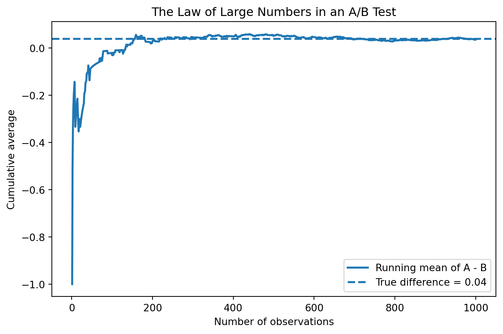
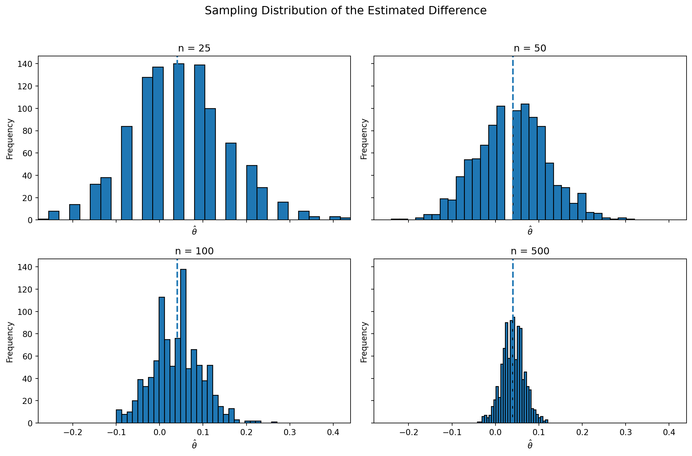

Simulating Key Ideas from Classical Frequentist Statistics
Author
Lawrence Lin
Published
April 14, 2026
Introduction
Imagine you run a website with a landing page where visitors can sign up for your newsletter. You might think the wording of the sign-up message is a small detail, but even small changes can affect how many people actually subscribe.
In this example, I compare two different calls to action (CTAs). CTA A says, “Sign up for our newsletter here!” and CTA B says, “Stay up to date by signing up!” They are very similar, but one version might be a little more effective at convincing visitors to sign up.
To find out which one works better, I use an A/B test. In an A/B test, visitors are randomly shown one of two versions. Some people see CTA A, and others see CTA B. Then I compare the sign-up rates in the two groups. Because the assignment is random, this gives a fair way to measure whether one CTA performs better than the other.
In the rest of this post, I use this simple A/B testing setup to walk through some of the main ideas in classical frequentist statistics, including estimation, sampling variation, the law of large numbers, the bootstrap, hypothesis testing, and why checking results too early can be misleading.
The A/B Test as a Statistical Problem
In this A/B test, each visitor either signs up for the newsletter or does not. That means each outcome can be written as 1 or 0, so it makes sense to model each visitor’s result as a Bernoulli random variable.
Because the CTA may affect behavior, the probability of signing up can be different across the two groups. I call these probabilities (_A) and (_B), where (_A) is the sign-up rate for visitors who see CTA A and (_B) is the sign-up rate for visitors who see CTA B.
The main quantity I want to study is the difference in sign-up rates:
[ = _A - _B ]
To estimate this difference, I use the difference in sample means:
[ = {X}_A - {X}_B ]
Since the outcomes are just 0s and 1s, the sample mean in each group is simply the sample sign-up rate. So this estimator is just the observed difference in conversion rates between the two CTAs.
Simulating Data
In a real A/B test, we would not know the true sign-up probabilities in advance. We would only observe the data and try to estimate them. For this exercise, I set the probabilities myself so I can compare my estimates to the true value. I use Python to simulate the data.
I assume that (_A = 0.22) and (_B = 0.18), so the true difference is (= 0.04).
The Law of Large Numbers says that as the sample size grows, the sample average gets closer to the true population average. In this A/B testing example, that means the estimated difference in sign-up rates, ( = {X}_A - {X}_B), should get closer to the true difference (= 0.04) as we observe more visitors. The estimate may move around a lot at first, but with a larger sample it should become more stable.
import numpy as npimport matplotlib.pyplot as pltdiffs = A - Brunning_mean = np.cumsum(diffs) / np.arange(1, len(diffs) +1)plt.figure(figsize=(8, 5))plt.plot(np.arange(1, len(diffs) +1), running_mean, linewidth=2, label="Running mean of A - B")plt.axhline(theta_true, linestyle="--", linewidth=2, label="True difference = 0.04")plt.xlabel("Number of observations")plt.ylabel("Cumulative average")plt.title("The Law of Large Numbers in an A/B Test")plt.legend()plt.show()

The plot shows that the running average is very unstable at the beginning because it is based on only a few observations. As the sample size grows, the estimate becomes much more stable and moves closer to the true difference of 0.04. This illustrates the main idea of the Law of Large Numbers: with more data, sample averages become more reliable.
Bootstrap Standard Errors
So far, I have estimated the difference in sign-up rates between the two CTAs. The next question is how precise that estimate is. A point estimate gives a single best guess, but it does not tell us how much uncertainty comes with that guess. To measure that uncertainty, I use the bootstrap.
The bootstrap is a resampling method. Instead of relying only on a formula, I repeatedly resample from the observed data with replacement and recalculate the statistic each time. Here, I resample the A group and the B group separately, compute the difference in sample means for each resample, and use the standard deviation of those resampled estimates as the bootstrap standard error.
I also compare the bootstrap standard error to the analytical standard error for the difference in two independent sample proportions. If the two values are close, that suggests the bootstrap is doing a good job capturing the sampling variability of the estimator.
The bootstrap standard error (0.0181) and the analytical standard error (0.0177) are very close, which is reassuring. This suggests that the bootstrap is doing a good job capturing the sampling variability of the estimator.
Using the bootstrap standard error, I construct a 95% confidence interval for (), which is approximately ([0.0006, 0.0714]). Because this interval stays slightly above 0, the results suggest that CTA A may perform better than CTA B. At the same time, the lower bound is very close to 0, so the evidence is not overwhelming and the true effect may be fairly small.
The Central Limit Theorem
The Central Limit Theorem says that as the sample size gets larger, the sampling distribution of a sample mean becomes approximately Normal, even if the original data are not Normally distributed. In this A/B testing setup, the same idea applies to the difference in sample means, ( = {X}_A - {X}_B). Since each outcome is binary, the raw data are definitely not Normal, but the distribution of () should become smoother and more bell-shaped as the sample size increases.
To show this, I simulate the A/B test many times for four different sample sizes: (n = 25, 50, 100,) and (500). For each value of (n), I repeatedly draw samples from the two Bernoulli distributions, compute (), and then plot the distribution of those simulated estimates.
import matplotlib.pyplot as pltimport numpy as npnp.random.seed(403)sample_sizes = [25, 50, 100, 500]n_sims =1000fig, axes = plt.subplots(2, 2, figsize=(12, 8), sharex=True, sharey=True)axes = axes.flatten()all_thetas = {}for i, n inenumerate(sample_sizes): theta_hats = []for _ inrange(n_sims): A_sim = np.random.binomial(1, pi_A, n) B_sim = np.random.binomial(1, pi_B, n) theta_hats.append(A_sim.mean() - B_sim.mean()) theta_hats = np.array(theta_hats) all_thetas[n] = theta_hatsx_min =min(arr.min() for arr in all_thetas.values())x_max =max(arr.max() for arr in all_thetas.values())for i, n inenumerate(sample_sizes): axes[i].hist(all_thetas[n], bins=30, edgecolor="black") axes[i].axvline(theta_true, linestyle="--", linewidth=2) axes[i].set_title(f"n = {n}") axes[i].set_xlabel(r"$\hat{\theta}$") axes[i].set_ylabel("Frequency") axes[i].set_xlim(x_min, x_max)plt.suptitle("Sampling Distribution of the Estimated Difference", fontsize=14)plt.tight_layout(rect=[0, 0, 1, 0.96])plt.show()

These histograms show the Central Limit Theorem in action. When the sample size is small, the distribution of () looks rougher and less smooth. As the sample size increases, the distribution becomes more concentrated around the true difference of 0.04 and takes on a more bell-shaped form.
This matters because many classical statistical tools rely on Normal approximations. The larger the sample size, the more reasonable it becomes to use those approximations when analyzing an A/B test.
Hypothesis Testing
Now that the Central Limit Theorem gives us an approximately Normal sampling distribution for \(\hat{\theta}\) in large samples, we can use that result to carry out a formal hypothesis test. The basic idea of hypothesis testing is to ask whether the observed difference in sign-up rates is large enough that it would be unlikely to happen just by random chance if the two CTAs were actually equally effective.
Here, the null hypothesis is
\[
H_0: \theta = 0
\]
which means the two CTAs have the same true sign-up rate. The alternative hypothesis is
\[
H_1: \theta \neq 0
\]
which means the two CTAs do not have the same sign-up rate. The goal is to see whether the data provide enough evidence to reject the null hypothesis.
To do this, I standardize the estimate by dividing it by its standard error:
\[
z = \frac{\hat{\theta} - 0}{SE(\hat{\theta})}
\]
This standardization matters because the CLT tells us that \(\hat{\theta}\) is approximately Normally distributed when the sample size is large. Under the null hypothesis, that distribution is centered at 0. Once I divide by the standard error, the test statistic is approximately standard Normal under \(H_0\), which means I can use the standard Normal distribution to calculate a p-value.
This is sometimes loosely called a t-test, but in this setting it is more accurate to think of it as a large-sample z-test. A classical t-test comes from Normal data with an estimated variance, which gives an exact t-distribution result. Here the data are Bernoulli, not Normal, so there is no exact t-distribution result. Instead, the justification comes from the CLT. In practice, with large samples the t and Normal distributions are very similar, so the difference is usually small, but the logic behind the test is still worth understanding.
The test statistic tells us how many standard errors the observed estimate is away from 0. In this sample, the estimated difference is positive, so the z-statistic is also positive. The p-value tells us how surprising a result this large would be if the true difference were actually 0.
Using my simulated data, the p-value is 0.0416, which is below 0.05. This gives evidence against the null hypothesis at the 5% level. I would reject \(H_0\) and conclude that the data suggest the two CTAs do not perform the same. Since the estimated difference is positive, the result points toward CTA A performing better than CTA B, although the effect is still fairly modest.
The T-Test as a Regression
The two-sample test from the previous section can also be written as a simple linear regression. This is useful because it shows that hypothesis testing and regression are closely connected. In fact, in a simple A/B test like this one, the estimated treatment effect from a regression is the same as the difference in sample means.
To set this up, I stack the data from both CTA groups into one dataset. Let \(Y_i\) be the outcome for visitor \(i\), where \(Y_i = 1\) if the visitor signs up and \(Y_i = 0\) otherwise. Let \(D_i\) be an indicator for treatment status, where \(D_i = 1\) if the visitor sees CTA A and \(D_i = 0\) if the visitor sees CTA B. Then I fit the regression
\[
Y_i = \beta_0 + \beta_1 D_i + \varepsilon_i
\]
The coefficients have a simple interpretation. When \(D_i = 0\), the expected value of \(Y_i\) is \(\beta_0\), so \(\beta_0\) is the mean sign-up rate in group B. When \(D_i = 1\), the expected value of \(Y_i\) is \(\beta_0 + \beta_1\), so this gives the mean sign-up rate in group A. That means \(\beta_1\) is the difference between the two group means:
\[
\beta_1 = \pi_A - \pi_B = \theta
\]
So in this setting, the OLS estimate \(\hat{\beta}_1\) should match the difference in sample means \(\hat{\theta} = \bar{X}_A - \bar{X}_B\).
The regression coefficient on \(D_i\) matches the estimated difference in sign-up rates from the previous section, which is exactly what we expect. The test statistic and p-value are also extremely similar. Any small differences come from the way the standard error is computed in the two approaches.
This equivalence matters because regression is a very flexible framework. In this simple case, it reproduces the same treatment effect as the two-sample comparison. But once the setup becomes more complicated, regression makes it much easier to add control variables, interaction terms, or multiple treatment groups while keeping the same basic logic of causal comparison.
The Problem with Peeking
One important problem in A/B testing is peeking, which means checking the results before the planned sample size has been reached. Imagine a manager who does not want to wait until all 1,000 visitors per group have arrived. Instead, she checks the results after every 100 visitors in each group and stops the test early if the p-value is below 0.05.
This is a problem for classical frequentist testing because a 5% significance level only controls the false positive rate for one test. If I keep testing the data again and again as new observations come in, each additional look creates another chance to get a significant result just by luck. As a result, the overall probability of making at least one false rejection becomes much larger than 5%.
To show this, I simulate a world where the null hypothesis is actually true. I set both sign-up probabilities equal to 0.20, so there is no real difference between CTA A and CTA B. Then I repeatedly run A/B tests, peek after every 100 observations per group, and record whether at least one of those peeks produces a p-value below 0.05.
The simulation shows that peeking raises the false positive rate well above the usual 5% level. In my simulation, the empirical false positive rate increases to about 0.2039. That means that even when there is truly no difference between the two CTAs, repeated testing creates many chances to get a significant result just by random variation.
This matters in practice because stopping a test early after a “lucky” result can make an ineffective CTA look like a winner. In other words, peeking inflates the Type I error rate and makes false discoveries much more likely. If a team wants to monitor results over time, it should use methods designed for sequential testing rather than repeatedly applying an ordinary 5% hypothesis test.